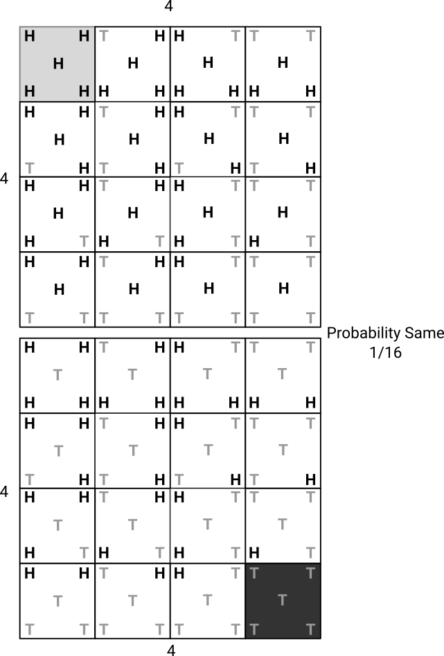
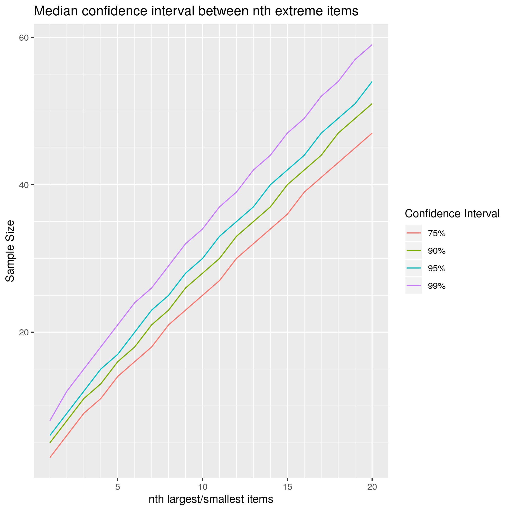

94% confidence with 5 measurements
There are many things that are valuable to know in business but are hard to measure. For example the time from when a customer has a need to purchase, the number of related products customers use or the or the actual value your products are delivering. However you don’t need a sample size of hundreds to get an estimate; in fact you can get a statistically significant result from measuring just 5 random customers.
For any of these measurements there’s a 94% chance that the median value is between the biggest and smallest value of 5 random samples. The median value is a “typical” value; half of measurements will have a larger value and half will have a smaller value. The median is often more useful than the mean average because it isn’t impacted by outliers.
It might sound surprising that you can get this much confidence with so few measurements, but it’s true. When you measure a random sample it’s a 50/50 chance as to whether it’s above or below the median. So the chance that 5 random samples are all above or below the median is the same as the chance of flipping a coin 5 times and getting all heads or all tails. The probability of this is 1 in 16, or about 6%, and so 94% of the time there will be one sample above and one below the median. And so 94% of the time the median will be between the smallest and largest value.

When things are highly uncertain but can impact decisions it’s be worth investing a little to get some measurement of it. The key assumption here is that the sample is truly random; but for impactful and uncertain measures it’s worth the investment of sampling.
The range between the maximum and minimum value may be huge (in statistical jargon: the test is low power). To reduce the variability you could the median as the value between the 2nd largest and 2nd smallest value of 8 items, or between the 3rd largest and 3rd smallest value of 11 items. This table shows the tradeoff between sample size and confidence.
| nth largest/smallest | Sample at 75% | Sample at 90% | Sample at 95% | Sample at 99% |
|---|---|---|---|---|
| 1st | 3 | 5 | 6 | 8 |
| 2nd | 6 | 8 | 9 | 12 |
| 3rd | 9 | 11 | 12 | 15 |
| 4th | 11 | 13 | 15 | 18 |
| 5th | 14 | 16 | 17 | 21 |
| 6th | 16 | 18 | 20 | 24 |
| 7th | 18 | 21 | 23 | 26 |
| 8th | 21 | 23 | 25 | 29 |

Calculating it yourself
The idea is from the wonderful book “How to Measure Anything” by Douglas W. Hubbard.
Here’s some R code that generates the table and plots above.
# Exact calculation
ci_quantile_extreme <- function(num_samples, nth_smallest=1, nth_largest=1, quantile=0.5) {
stopifnot(nth_largest + nth_smallest < num_samples)
stopifnot((0 < quantile) && (quantile < 1))
# Number of ways all but the nth largest values could be bigger than quantile
freq_larger <- sum(choose(num_samples, seq(0, nth_largest - 1)))
# Number of ways all but the nth smallest values could be bigger than quantile
freq_smaller <- sum(choose(num_samples, seq(0, nth_smallest - 1)))
1 - (freq_larger * quantile ^ num_samples + freq_smaller * (1 - quantile) ^num_samples)
}
# Test calculation with random sample
sample_quantile_extreme <- function(sample_size, nth_smallest, nth_largest, num_sample=10000, quantile=0.5) {
distribution <- runif
distribution_median <- quantile
samples <- distribution(sample_size * num_sample)
dim(samples) <- c(sample_size, num_sample)
sorted_samples <- apply(samples, 2, sort)
mean((sorted_samples[nth_smallest,] <= distribution_median) &
(sorted_samples[sample_size+1-nth_largest,] >= distribution_median))
}
# Calculate the number of samples at nth largest to reach at least ci
median_extreme_samples_at_ci <- function(nth, ci=0.9) {
sample_size <- 2*nth + 1
while(ci_quantile_extreme(sample_size, nth, nth) < ci) {
sample_size <- sample_size + 1
}
sample_size
}
# Generate a table of confidences
ci_median_extreme_table <- function(n_max=10, ci=0.9) {
nth_largest <- seq(1, n_max)
sample_size <- vapply(nth_largest,
function(n) median_extreme_samples_at_ci(n, ci),
double(1))
confidence_interval <- mapply(ci_quantile_extreme, sample_size, nth_largest, nth_largest)
data.frame(nth_largest, sample_size, confidence_interval, ci=ci)
}
# Power depends a lot on the distribution
df <- rbind(
ci_median_extreme_table(20, 0.75),
ci_median_extreme_table(20, 0.9),
ci_median_extreme_table(20, 0.95),
ci_median_extreme_table(20, 0.99)
)
df$confidence_interval = paste0(as.character(df$ci * 100), '%')
library(ggplot2)
ggplot(df, mapping=aes(nth_largest, sample_size, color=confidence_interval, group=confidence_interval)) +
geom_line() +
scale_x_continuous(minor_breaks=seq(1, 20)) +
scale_y_continuous(minor_breaks=seq(0, 100, by=5)) +
labs(x="nth largest/smallest items", y="Sample Size", color="Confidence Interval",
title="Median confidence interval between nth extreme items")